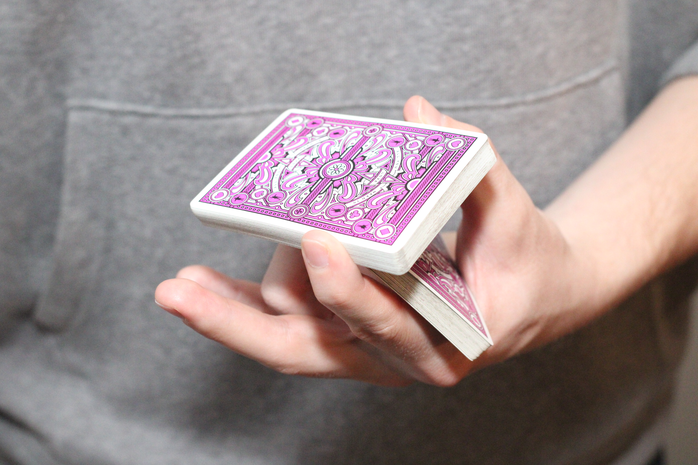

Cuts:
In cardistry, cuts refer to a variety of techniques used to visually separate, rearrange, or manipulate packets of cards within a deck. These maneuvers are often used to create visually stunning displays or transitions between different card flourishes. Here are some common types of cuts in cardistry:
1. Charlier Cut:
A fundamental one-handed cut where a packet of cards is cut from the middle of the deck and pivoted around the index finger before being reassembled.
Step 1:
Holding the deck in an elevated Straddle Grip with your non-dominant hand, so that the cards are near the tips of your fingers, release the bottom half of the cards with your thumb, allowing the bottom packet to fall into the palm of your hand.
Tip: Make sure to put very little pressure on the deck with your pinky and index finger, so that the packets are suspended from your thumb, middle, and ring fingers.
Step 2:
Place your index finger beneath the bottom packet, near the farthest corner of the cards. Then, apply upward pressure with your index finger, hinging the bottom packet along the face of the other packet until the bottom packet passes the top packet along the long side.

Step 3:
Next, remove your index finger from beneath the packet, allowing the top packet to fall into your palm.
Finally, push the standing upright downwards with your thumb, allowing both packets to close together.
2. Revolution Cut:
Revolution Cut (often known as Rev Cut) is very similar to Charlier Cut, however rather than simply closing, the top packet rotates around your finger before completing the trick!
Step 1:
Hold the deck in an elevated modified Straddle Grip in your non-dominant hand, with your index finger on the long side opposite to your thumb. Then, release the bottom half of the cards with your thumb, allowing the bottom packet to fall into the palm of your hand.
Step 2:
Release the top packet with all of your fingers excluding your thumb and index finger. Then, using your ring finger, lift the bottom packet along the far long side, while rotating the top packet slightly, until the top packet is positioned between your ring and index on opposing long sides.
*Alternate angle*
Step 3:
While holding the top packet, bring your index finger toward you, simultaneously moving your ring finger away, thus rotating the deck nearly 180 degrees.
After the top packet has rotated completely, the top packet should fall into the palm of your hand. Then, use your thumb to collapse the two packets together.
3. Swing Cut:
The Swing Cut is an effective way to split the deck into a variety of different packets, which can be useful in a variety of different tricks and combos!
Step 1:
Holding the deck in Biddle Grip in your dominant hand, use your index finger to lift a small packet from the short side of the deck.
Step 2:
With the packet hinged between your index and your thumb, move your index finger toward your non-dominant hand, while you move your dominant hand in the same direction.
Step 3:
Finally, using your non-dominant hand, pinch the top packet at the base of your thumb and index finger. Then, drop the packet into your palm, catching the packet with your pinky.
Tip: Repeat these steps as many times as required for the trick you are attempting. Remember to start slow and gradually increase your speed as you improve, that will eventually give you the “swing” impression.

4. Scissor Cut:
The Scissor cut is a cut most often used to rearrange the deck. This move will increase the dexterity of your hands to allow you to preform many moves more easily.
Step 1:
Holding the deck in a Straddle Grip in your non-dominant hand, use that hand’s thumb and lift a packet from the bottom short side close to the corner.
Step 2:
After you have lifted the packet, move the packet using your thumb away from your pinky, rotating the packet around your index finger until both packets are nearly aligned vertically.
Step 3:
Once both packets are aligned, rotate the packet back toward your pinky with the corner of the top packet beneath the first packet.
Continue to return the packet back to its initial position until you are back to straddle grip.

These are just a few examples, and there are countless variations and combinations of cuts that cardists use to showcase their skills and creativity. Cuts are an essential component of cardistry routines, adding rhythm, flow, and visual interest to performances.